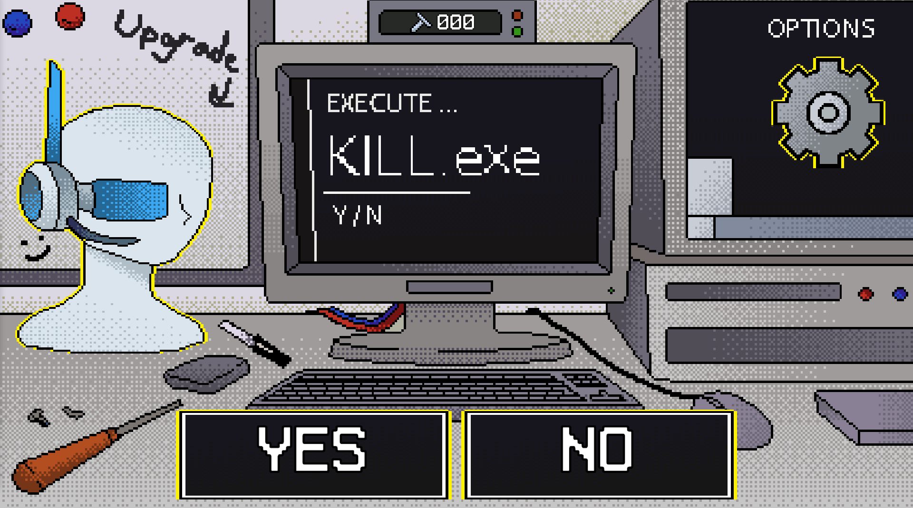
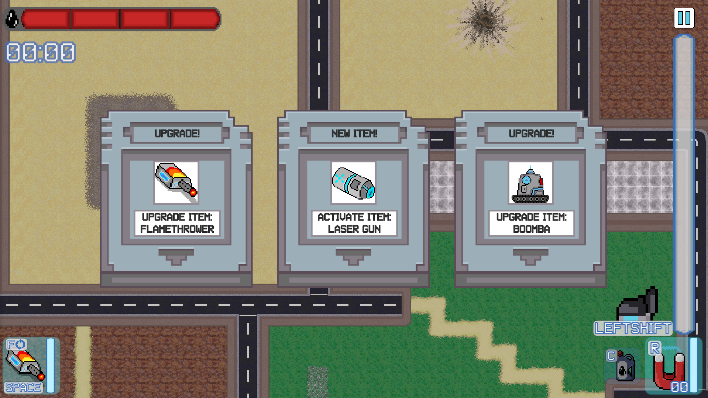
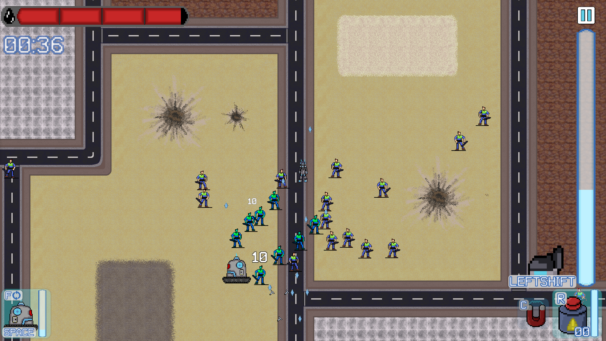

Kill.exe is a 2D roguelike action game developed in a 5-person team during the 2024–2025 academic year. Inspired by Vampire Survivors-style gameplay, this project aimed to simulate a full production pipeline from concept to final build. My contributions spanned both core programming and official team leadership.

Key Features
- Fast-paced roguelike combat inspired by horde-survival mechanics.
- 13 unique active and passive items with modular implementation.
- Wave-based progression with scalable difficulty and enemy variety.
- Stylized pixel art and visual effects enhancing chaotic gameplay.
My Role
I served as both a core programmer and the official producer for the team. My responsibilities included:
- Creating the modular item system, enabling scalable addition of gameplay items.
- Designing and programming all 13 passive and active items in the game.
- Establishing programming guidelines and project structure in early development.
- Implementing inventory and equipment logic to support item usage and synergies.
- Managing the team using Agile methodology and a simplified JIRA-like workflow.
- Maintaining version control using GitHub and ensuring development workflow consistency.
- Collaborating with the UX designer to improve gameplay feel and system feedback.
My role was officially designated and recognized within the team, and I consistently ensured the team met key deadlines and production milestones.
Screenshots



Download / Play
🔗 Developed by Logstorm Games